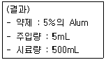
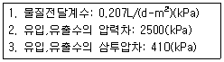

수질환경산업기사 (2004-08-08 기출문제)
1과목: 수질오염개론
1. 1차반응에 있어 반응 초기의 농도가 100 mg/L이고, 반응 4시간 후에 10 mg/L로 감소되었다. 반응 2시간 후의 농도(mg/L)는?
- 21.6
- 31.6
- 41.6
- 51.6
(정답률: 알수없음)

2. 0.1N HCℓ 40mℓ 와 중화반응하는데 필요한 0.25N NaOH의 부피는?
- 10mℓ
- 12mℓ
- 14mℓ
- 16mℓ
(정답률: 알수없음)
3. 호수의 성층현상에 관한 설명으로 알맞지 않은 것은?
- 겨울에는 호수 바닥의 물이 최대 밀도를 나타내게 된다.
- 봄이 되면 수직운동이 일어나 수질이 개선된다.
- 여름에는 수직운동이 호수 상층에만 국한된다.
- 수심에 따른 온도변화로 인해 발생되는 물의 밀도차에 의해 일어난다.
(정답률: 알수없음)
4. Glucose(C6H12O6) 200mg/L 용액을 호기성 처리시 필요한 이론적 질소량은?(mg/L) (단, BOD5:N:P = 100:5:1, K1=0.1 day-1, 상용대수기준)
- 약 2.8
- 약 3.7
- 약 6.7
- 약 7.3
(정답률: 알수없음)
5. glycine(CH2(NH2)COOH)의 이론적 COD/TOC의 비는? (단, 글리신 최종분해물은 CO2, HNO3, H2O 이다)
- 6.67
- 5.67
- 4.67
- 3.67
(정답률: 알수없음)
6. 용량 1000L인 물의 용존산소 농도가 9.2mg/ℓ 인 경우, Na2SO3로 물속의 용존산소를 완전히 제거 하려고 한다. 필요한 이론적 Na2SO3의 양은? (단, Na원자량: 23)
- 72.45g
- 74.25g
- 76.82g
- 78.95g
(정답률: 알수없음)
7. 25℃에서 pH= 6.35인 용액에서 [OH-]이온 농도는?
- 약 2.2× 10-7 mol/L
- 약 2.2× 10-8 mol/L
- 약 4.5× 10-7 mol/L
- 약 4.5× 10-8 mol/L
(정답률: 알수없음)
8. 다음중 적조현상과 관계가 없는 것은?
- 해류의 정체
- 염분농도의 증가
- 수온의 상승
- 영양염류의 증가
(정답률: 알수없음)
9. 수중의 용존산소에 대한 설명중 잘못된 것은?
- 수온이 높을수록 용존산소량은 감소한다.
- 용존염류의 농도가 높을수록 용존산소량은 감소한다.
- 같은 수온하에서는 담수보다 해수의 용존산소량이 높다.
- 현존 용존산소 농도가 낮을수록 산소전달율은 높아진다.
(정답률: 알수없음)
10. 클로이드의 안정도에 대한 설명과 가장 거리가 먼 것은?
- 일반적으로 Zeta 전위의 크기에 따라 결정된다.
- Zeta 전위는 콜로이드 입자의 전하와 전하의 효력이 미치는 분산매의 양을 측정한다.
- Zeta 전위가 O에 가까워질수록 응결이 쉽게 일어난다
- Zeta 전위는(ζ ) [(4π Α Β )/D]로 나타낸다. (A:입자와 용액부 사이의 전하량의 차, B:전하량의 차가 유효한 입자를 둘러싼 층의 두께D:매질의 유전상수)
(정답률: 알수없음)
11. 물의 물리적 성질을 나타낸 것중 틀린 것은?
- 비열 1.0cal/g(20℃)
- 표면장력 72.75dyne/cm(20℃)
- 음파의 전파속도 1482.9m/sec(20℃)
- 융해열 79.40cal/g(0℃)
(정답률: 알수없음)
12. 농업용수의 수질 평가시 사용되는 SAR(Sodium Adsorption Ratio)에 관련된 이온으로만 짝지어진 것은?
- Na, Ca, Mg
- Mg, Ca, Fe
- K, Ca, Mg,
- Na, Al, Mg
(정답률: 알수없음)
13. Ca2+ 이온의 농도가 200mg/L인 물의 환산경도는? (단, Ca원자량: 40 )
- 100mg CaCO3/L
- 300mg CaCO3/L
- 500mg CaCO3/L
- 700mg CaCO3/L
(정답률: 알수없음)
14. K1(탈산소계수, base = 상용대수)가 0.1/day 인 어느물질의 BOD5 = 400㎎/ℓ이고, COD= 1000㎎/ℓ라면NBDCOD(㎎/ℓ)는? (단, BDCOD=BODU)
- 345
- 385
- 415
- 465
(정답률: 알수없음)
15. 박테리아(Bacteria)의 경험적 분자식으로 가장 적절한 것은?
- C5H7O2N
- C5H8O2N
- C10H17O6N
- C7H14O3N
(정답률: 알수없음)
16. 유량 20 m3/sec의 하천에 유량 10 m3/sec인 지천이 연결되어 있다. 연결전의 하천의 염소농도는 25.0 mg/L이고 지천의 염소농도는 50.0 mg/L이다. 염소를 보존성 물질이라 보고, 두 하천이 완전혼합되는 합류점 하류에서의 염소농도는?
- 약 24 mg/L
- 약 28 mg/L
- 약 33 mg/L
- 약 37 mg/L
(정답률: 알수없음)
17. 광합성종속영향미생물계의 에너지원과 탄소원으로 가장 알맞는 것은?
- 빛, CO2
- 무기물의 이화작용, 무기탄소
- 빛, 유기탄소
- 유기물의 동화작용, 무기탄소
(정답률: 알수없음)
18. 어떤 하천수의 수온은 10℃이다. 20℃의 탈산소계수 K(상용대수)가 0.15/day일 때 [ BOD6/최종BOD ]는? (단, KT = K20×1.047(T-20))
- 0.53
- 0.63
- 0.73
- 0.83
(정답률: 알수없음)
19. 강물의 유량조사를 위하여 500mg/L의 추적자(tracer)를 500L/min의 유량으로 주입시켰다. 그 결과 측정지점에서의 추적자 농도는 200mg/L로 조사되었다. 강물에 원래 함유되어 있는 추적자의 농도가 50mg/L인 것으로 조사 되었다면, 이들 자료에서 강물의 유량은?
- 500 L/min
- 750 L/min
- 1,000 L/min
- 1,250 L/min
(정답률: 알수없음)
20. 음용수 중에 암모니아성 질소를 검사하는 것의 위생적 의미로 가장 알맞는 것은?
- 조류발생의 지표가 된다.
- 자정작용의 기준이 된다.
- 분뇨, 하수의 오염지표가 된다.
- 냄새 발생의 원인이 된다.
(정답률: 알수없음)
2과목: 수질오염방지기술
21. BOD 1000mg/ℓ , 폐수량 500m3/일의 공정폐수를 BOD 용적 부하 0.4kg/m3.일의 활성슬러지법으로 처리하는 경우 포기조의 수심을 4m로 하면 포기조의 표면적은?
- 약 255m2
- 약 315m2
- 약 435m2
- 약 475m2
(정답률: 알수없음)
22. 폭이 5m, 길이가 15m, 수심이 3m인 침전지의 유효수심은 2.7m이고 유량은 2700 m3/day이다. 침전지의 바닥에 슬러지가 유효수심의 1/5을 차지하고 있다면 침전지 유속은?
- 약 0.17 m/min
- 약 0.21 m/min
- 약 0.28 m/min
- 약 0.36 m/min
(정답률: 알수없음)
23. 비중 1.3, 직경 0.⑤mm의 입자가 수중에서 자연적으로 침강할 때의 속도가 Stockes의 법칙에 따라 0.⑤ m/hr 이라 하면 비중 2.5, 직경 0.1mm인 입자의 침강속도는? (단, 물의 비중은 1.0으로 하고 기타조건은 같다.)
- 0.45 m/hr
- 0.60 m/hr
- 0.75 m/hr
- 1.00 m/hr
(정답률: 알수없음)
24. Jar Test를 한 결과는 다음과 같다. Alum의 최적 주입율은 얼마인가?

- 400㎎/L
- 500㎎/L
- 600㎎/L
- 700㎎/L
(정답률: 알수없음)
25. 유량이 2500m3/day인 폐수를 활성슬러지법으로 처리하고자 한다. 폭기조로 유입되는 SS농도가 200mg/L이고 포기 조내의 MLSS 농도가 2000mg/L이고 포기조 용적이 1000m3 일 때 슬러지 일령은?
- 2 day
- 3 day
- 4 day
- 5 day
(정답률: 알수없음)
26. 18 mg/L의 NH4+ 이온을 함유하는 폐수 4000m3을 이온교환 수지로 처리하고자 한다. 교환용량이 100,000g CaCO3/m3인 양이온 교환수지를 시용한다면 이론상 요구되는 수지의 양은? (단, Ca원자량: 40 )
- 1 m3
- 2 m3
- 3 m3
- 4 m3
(정답률: 알수없음)
27. 오존살균에 관한 설명으로 틀린 것은?
- 오존은 상수의 최종살균을 위해 주로 사용된다
- 오존은 저장할 수 없어 현장에서 생산해야 한다
- 오존은 산소의 동소체로 HOCl보다 더 강력한 산화제이다
- 수용액에서 오존은 매우 불안정하여 20℃의 증류수에서의 반감기는 20-30분 정도이다
(정답률: 알수없음)
28. 포기조내 MLSS농도가 3,200mg/L이고, 1ℓ 의 임호프콘에 30분간 침전시킨 후 그것의 부피는 400㎖ 였다. 이때의 SVI(Sludge Volume Index)는?
- 80
- 100
- 125
- 150
(정답률: 알수없음)
29. 역삼투법으로 하루에 200m3의 3차 처리 유출수를 탈염하기 위해 소요되는 막의 면적은?

- 462m2
- 625m2
- 878m2
- 965m2
(정답률: 알수없음)
30. 고도수처리에 이용되는 분리막중 '투석'의 구동력으로 알맞는 것은?
- 정수압차(0.1 - 1Bar)
- 정수압차(20 - 100Bar)
- 전위차
- 농도차
(정답률: 알수없음)
31. 다음의 생물학적 인 및 질소제거 공정중 질소 제거를 주목적으로 개발한 공법으로 가장 적절한 것은?
- 4단계 Bardenpho 공법
- A2/O 공법
- A/O 공법
- Phostrip 공법
(정답률: 알수없음)
32. 고율상수여상법에 관한 내용과 가장 거리가 먼 것은?
- 수리학적부하율: 9.4 - 37m3/m2· day
- 질산화 정도: 잘됨
- 파리: 거의 없음
- BOD제거율(%): 40 - 80
(정답률: 알수없음)
33. 어떤 공장에서 폐수량 800m3/d, 침전지에 유입하는 폐수의 오염물질 농도(SS)는 500mg/ℓ , 처리효율이 90%일 때, 이 침전지에서 발생되는 슬러지의 용적은? (단, 슬러지의 비중은 1.02, 슬러지의 함수율은 97%이다. 생물학적분해는 고려하지 않음 )
- 약 10 m3/d
- 약 12 m3/d
- 약 15 m3/d
- 약 18 m3/d
(정답률: 알수없음)
34. 활성슬러지 혼합액을 부상농축기로 농축하고자 한다. 부상 농축기에 대한 최적 A/S비가 0.008 이고 공기용해도가 18.7mℓ /ℓ 일 때 용존공기의 분율이 0.5이라면 필요한 압력은?(단, 비순환식 기준, 혼합액의 고형물농도는 0.3%이다)
- 2.67 atm
- 3.98 atm
- 4.62 atm
- 6.34 atm
(정답률: 알수없음)
35. 자기조립법(UASB)의 특성으로 알맞지 않는 것은?
- 조립시점이 빠르고 인 제거율이 높다.
- 균체를 고농도의 펠렛 모양으로 유지할 수 있다.
- 펠렛이 크게 활성화 된다.
- 고부하 운전이 가능하다.
(정답률: 알수없음)
36. 어떤 도시의 폐수 처리 기본 계획을 위하여 조사한 자료는 다음과 같다. 생활하수와 공장폐수를 혼합하여 공동처리할 경우 처리장에 들어오는 혼합유입수의 BOD농도는? (단, 계획인구: 50,000인, 계획 1인 1일 오수량: 450L, 계획 1인 1일 오탁부하량 BOD: 50g, 공장폐수량:50,000m3/d, 공장폐수 BOD: 500㎎/L)
- 350㎎/L
- 360㎎/L
- 380㎎/L
- 390㎎/L
(정답률: 알수없음)
37. 표준상태에서 300g glucose (C6H12O6)로 부터 발생 가능한 CH4가스의 용적은? (단, 혐기성 분해 기준)
- 84ℓ
- 96ℓ
- 112ℓ
- 124ℓ
(정답률: 알수없음)
38. BOD가 200㎎/ℓ 인 폐수 10000m3/d를 활성 슬러지법으로 처리할 때 폭기조의 MLSS 농도가 1900㎎/ℓ , F/M 비가 0.3㎏-BOD/㎏MLSS· day이라면 폭기조의 BOD 용적 부하는 몇 ㎏/m3· d인가?
- 0.57 ㎏/m3· d
- 0.68 ㎏/m3· d
- 0.79 ㎏/m3· d
- 0.92 ㎏/m3· d
(정답률: 알수없음)
39. 응결(Flocculation)과 관계가 가장 큰 것은?
- 완속혼합
- 급속혼합
- 연수화
- 안정화
(정답률: 알수없음)
40. BOD가 250mg/L인 하수를 1차 및 2차 처리로 BOD 30mg/L으로 유지하고자 한다. 2차 처리효율이 75%로 하면 1차처리 효율은?
- 33%
- 45%
- 52%
- 60%
(정답률: 알수없음)
3과목: 수질오염공정시험방법
41. 공정시험방법에서 사용하는 용어에 관한 설명으로 알맞지 않는 것은?
- '정확히 취하여'라 하는 것은 규정한 양의 검체 또는 시액을 홀피펫으로 눈금까지 취하는 것을 말한다
- '냄새가 없다'라고 기재한 것은 냄새가 없거나 또는 거의 없을 것을 표시하는 것이다
- 온수는 60 - 70℃를 말한다
- 감압 또는 진공이라 함은 따로 규정이 없는 한 15mmH2O이하를 말한다
(정답률: 알수없음)
42. 유기물을 다량 함유하고 있으면서 산화분해가 어려운 시료의 전처리 방법으로 가장 적절한 것은?
- 질산-염산에 의한 분해
- 질산-황산에 의한 분해
- 질산-과염소산에 의한 분해
- 질산-과염소산-불화수소산에 의한 분해
(정답률: 알수없음)
43. 폐수의 용존산소 측정시 아지드화 변법을 사용하는 이유로 가장 타당한 것은?
- 폐수중의 유기물의 방해를 제거하기 위하여
- 폐수중의 Fe3+의 방해를 제거하기 위하여
- 폐수중의 Cl-의 방해를 제거하기 위하여
- 폐수중의 NO2-의 방해를 제거하기 위하여
(정답률: 알수없음)
44. 디아조화법으로 측정하는 항목은 어느 것인가?
- 암모니아성 질소
- 아질산성 질소
- 질산성 질소
- 총 질소(TKN)
(정답률: 알수없음)
45. 클로로필a(chlorophyll-a)를 흡광광도법으로 측정하려 한다. 추출액의 흡광도를 측정하기 위한 파장이 아닌것은?
- 645nm
- 750nm
- 630nm
- 653nm
(정답률: 알수없음)
46. 취급 또는 저장하는 동안에 이물이 들어가거나 또는 내용물이 손실되지 아니하도록 보호하는 용기는?
- 밀폐용기
- 기밀용기
- 밀봉용기
- 차단용기
(정답률: 알수없음)
47. 어느 하수처리장에서 SS제거율를 구하기 위해 유입수와 유출수에서 시료를 각각 50 ㎖와 100 ㎖를 채취하였다. SS 여과 실험결과 유입수와 유출수의 건조시킨 후의 무게는 각각 1.5834 g과 1.5485 g이었고, 이때 사용된 여과지 무게는 1.5378 g이었다. SS제거율은?
- 약 88%
- 약 90%
- 약 92%
- 약 94%
(정답률: 알수없음)
48. 유량측정방법중에서 단면이 축소되는 목부분을 조절하므로써 유량이 조절된다는 점이 장점인 것은?
- 노즐(nozzle)
- 오리피스(orifice)
- 벤튜리미터(venturi meter)
- 피토우(pitot)관
(정답률: 알수없음)
49. 용존산소량(DO) 측정시 시료에 활성슬러지 미생물 플록(floc)이 형성된 경우의 시료 전처리로 가장 옳은 것은?
- 칼륨명반-암모니아 용액 주입
- 황산구리-슬퍼민산 용액 주입
- 알카리성 요오드화칼륨-아지드화나트륨 용액 주입
- 불화칼륨-황산 용액 주입
(정답률: 알수없음)
50. 흡광광도계 측광부의 광전측광에 사용되는 광전도셀의 파장범위는?
- 자외 파장
- 가시 파장
- 근적외 파장
- 근자외 파장
(정답률: 50%)
51. 개수로에 의한 유량측정시 평균유속은 Chezy의 유속 공식을 적용한다. 이 때 경심에 대한 설명중 옳은 것은?
- 수로 중앙지점의 수심(H)을 말한다.
- 측정지점에서의 평균단면적(A)을 홈바닥의 구배(I)로 나눈 것을 말한다.
- 유수단면적(A)을 윤변(S)으로 나눈 것을 말한다.
- 홈바닥의 구배(I)를 수심(H)으로 나눈 것을 말한다.
(정답률: 알수없음)
52. 직각 3각 위어를 사용하여 유량을 산출할 때 사용되는 공식은? (단, Q:유량, K:유량계수, b:절단의 폭, h:위어의 수두V:유속, t:시간 , 단위는 적절하다고 가정함)
- Q=Kh5/2
- Q=Kbh3/2
- Q=Kbh5/2
- Q=Kh3/2
(정답률: 알수없음)
53. n-헥산 추출물질 시험법은?
- 중량법
- 적정법
- 흡광광도법
- 원자흡광광도법
(정답률: 알수없음)
54. 가스크로마토 그래프 분석에 사용하는 검출기중 유기질소 화합물 및 유기염소 화합물을 선택적으로 검출할 수 있는 것으로 가장 적당한 것은?
- 전자포획형검출기
- 불꽃광도형 검출기
- 열전도도검출기
- 불꽃열이온화검출기
(정답률: 알수없음)
55. 시료 최대보존기간이 가장 짧은 측정항목은?
- 셀레늄
- 철
- 비소
- 크롬
(정답률: 알수없음)
56. 공정시험방법상 페놀측정시 적색의 안티피린계 색소의 흡광도를 측정하는 방법중 수용액인 경우, 몇 nm에서 측정하는가?
- 460
- 480
- 510
- 530
(정답률: 알수없음)
57. 다음중 채취된 시료를 보관할 때 가장 높은 pH상태로 유지하는 항목은?
- 화학적산소요구량
- 암모니아성질소
- 페놀류
- 유기인
(정답률: 알수없음)
58. 가스크로마토그래피법의 검출기 중 순도 99.99% 이상의 질소 또는 헬륨을 사용하여야 하는 것은?
- TCD
- FID
- ECD
- FPD
(정답률: 알수없음)
59. 수질오염공정시험방법중에서 BOD실험시 BOD값에 대한 사전 경험이 없을 때의 검액 희석비율로 옳지 않은 것은?
- 처리하지 않은 공장폐수와 침전된하수: 1 ∼ 5 %
- 강한공장폐수: 0.1 ∼ 1.0 %
- 처리하여 방류된 공장폐수: 10 ∼ 50 %
- 오염된 하천수: 25 ∼ 100 %
(정답률: 알수없음)
60. ICP(유도결합프라스마 발광광도법)의 분석장치 설치조건으로 적절하지 않는 것은?
- 실온 5 - 35℃, 상대습도 85%이하를 일정하게 유지할 수 있는 곳
- 부식성 가스의 노출이 없는 곳
- 발광부로 부터의 고주파가 타기기에 영향을 미치지 않는 곳
- 직사광선이 들어오지 않고 진동이 없는 곳
(정답률: 알수없음)
4과목: 수질환경관계법규
61. 수질환경보전법상 환경관리인의 교육을 받게 하지 아니한자에 대한 행정처분으로 적합한 것은?
- 벌금 200만원 이하
- 벌금 100만원 이하
- 과태료 100만원 이하
- 과태료 50만원 이하
(정답률: 알수없음)
62. 1일 폐수배출량이 2,000m3 이상의 사업장으로 청정지역에 있는 배출시설의 배출허용기준중 화학적 산소요구량(㎎/ℓ )은?
- 30이하
- 40이하
- 50이하
- 60이하
(정답률: 알수없음)
63. '수질오염원'에 관한 용어정의로 가장 알맞는 것은?
- 폐수배출시설외에 수질오염물질을 배출하는 시설로서 대통령령이 정하는 것을 말한다
- 폐수배출시설등 수질오염물질을 배출하는 시설로서 대통령령이 정하는 것을 말한다
- 폐수배출시설외에 수질오염물질을 배출하는 시설 또는 장소로서 환경부령이 정하는 것을 말한다
- 폐수배출시설등 수질오염물질을 배출하는 시설 또는 장소로서 환경부령이 정하는 것을 말한다
(정답률: 알수없음)
64. 배출부과금의 조정신청은 배출부과금 납부통지를 받은 날부터 며칠이내에 하여야 하는가?
- 15일
- 30일
- 60일
- 90일
(정답률: 알수없음)
65. 수질 생활환경 기준 중 호소의 I등급 기준에 대한 내용으로 맞는 것은?
- 화학적 산소요구량 : 2mg/L 이하
- 총질소 : 0.300mg/L 이하
- 총인 : 0.020mg/L 이하
- 용존산소량 : 7.5mg/L 이상
(정답률: 알수없음)
66. 과징금의 부과기준에 대한 다음 설명 중 옳지 않은 것은?
- 과징금은 최대 3억원까지 부과할 수 있다.
- 1일당 부과금액은 300만원이다.
- 2종사업장 규모별로 부과계수는 2.0이다
- 조업정지일수에 1일당 부과금액과 사업장 규모별 부과계수를 곱하여 산정한다.
(정답률: 알수없음)
67. 다음중 초과부과금 부과대상 오염물질이 아닌 것은?
- 부유물질
- 황 및 그 화합물
- 망간 및 그 화합물
- 유기인화합물
(정답률: 알수없음)
68. 유역환경청장 또는 지방환경청장이 교육대상자로 선발하여야 할 교육과정으로 적절한 것은？
- 배출시설 및 방지시설 관리자 과정
- 폐수처리기술요원과정
- 폐수처리장 관리자과정
- 환경관리인과정
(정답률: 알수없음)
69. 폐수종말처리시설의 유지, 관리기준에 따라 처리시설의 관리, 운영자가 실시하여야 하는 방류수 수질검사의 시행 횟수기준으로 적절한 것은?(단, 폐수종말처리시설의 규모는 3000m3/일 이며 방류수 수질이 현저하게 악화되지 않는 경우임)
- 월 1회이상
- 월 2회이상
- 주 1회이상
- 수시
(정답률: 알수없음)
70. 기본 부과금의 지역별 부과계수로 적합한 것은?
- '청정'지역: 2.0
- '가'지역: 2.0
- '나'지역: 1.5
- '특례'지역:1.0
(정답률: 알수없음)
71. 다음중 수질오염물질이면서 동시에 특정수질유해물질이 아닌 것은?
- 페놀류
- 시안화물
- 사염화탄소
- 비소 및 그 화합물
(정답률: 알수없음)
72. 다음중 배출부과금 감면대상이 아닌 것은?
- 당해 부과금 부과기준일 현재 최근 6월이상 방류수 수질기준을 초과하여 오염물질을 배출하지 아니한 사업자
- 최종방류구로 배출한 폐수를 재이용하는 사업자
- 사업장규모가 5종인 사업자
- 하수종말처리시설에 폐수를 유입하는 사업자
(정답률: 알수없음)
73. 수질환경보전법상 폐수처리방법이 물리적 또는 화학적 처리방법인 경우에 시운전기간은?
- 가동개시일부터 15일
- 가동개시일부터 30일
- 가동개시일부터 45일
- 가동개시일부터 60일
(정답률: 알수없음)
74. 환경관리인의 임명은 누가 하는가?
- 환경부장관
- 시.도지사
- 지방환경관리청장
- 사업자
(정답률: 0%)
75. 폐수처리업자의 준수사항중 수탁한 폐수는 정당한 사유없이 몇 일 이상 보관할 수 없는가?
- 10일
- 15일
- 20일
- 30일
(정답률: 알수없음)
76. 수질오염방지시설 중 화학적 처리시설이 아닌 것은？
- 살균시설
- 응집시설
- 흡착시설
- 침전물개량시설
(정답률: 알수없음)
77. 지정호소수질보전계획에 포함될 사항과 가장 거리가 먼것은?
- 상수도정비
- 수면청소
- 준설
- 조류제거
(정답률: 알수없음)
78. 다음은 종말처리시설별 배수설비의 설치방법 및 구조기준에 관한 내용이다. ( )안에 알맞는 내용은?
- 500
- 300
- 200
- 100
(정답률: 알수없음)
79. 법 규정에 의한 환경관리인등의 교육을 실시하는 기관으로 알맞은 것은?
- 환경관리공단-국립환경연구원
- 국립환경연구원-환경보전협회
- 환경관리인연합회-지방환경관리청
- 국립환경연구원-시,도보건환경연구원
(정답률: 알수없음)
80. 배출시설 및 방지시설의 운영기록은 최종기재한 날부터 얼마동안 보존하여야 하는가？
- 6월
- 1년
- 2년
- 3년
(정답률: 알수없음)
1차 반응속도식은 다음과 같습니다.
r = -k[A]
여기서 r은 반응속도, k는 속도상수, [A]는 반응물 농도를 나타냅니다.
이 식을 적분하면 다음과 같습니다.
ln[A] = -kt + ln[A]0
여기서 [A]0는 반응 초기 농도를 나타냅니다.
이 문제에서는 [A]0 = 100 mg/L, [A] = 10 mg/L, t = 4시간 입니다.
따라서, 위 식을 이용하여 k를 구하면 다음과 같습니다.
ln(10) = -k(4) + ln(100)
k = (ln(100) - ln(10)) / 4
k = 0.1733 h^-1
이제, 반응 2시간 후의 농도를 구하기 위해 다시 1차 반응속도식을 이용합니다.
[A] = [A]0 * e^(-kt)
여기서 t = 2시간 입니다.
[A] = 100 * e^(-0.1733*2)
[A] = 31.6 mg/L
따라서, 정답은 "31.6" 입니다.